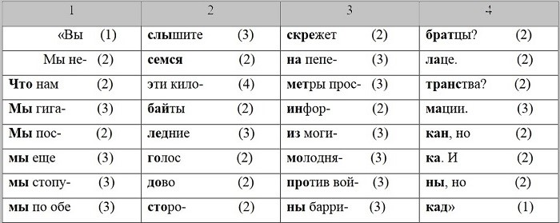

Ритмические конструкции
Рэп-текст состоит из строк (внезапно), их как правило 16 в куплете
строки должны соотноситься друг с другом или по количеству ударений (акцентный/тонический, стих)
или по количеству слогов (силлабический стих)
или по типу сочетаний ударных и безударных слогов (силлаботонический стих).
силлабический в слэйвянских языках почти не используется из-за разнообразия структур слов и высокой значимости ударений,
но все равно за количеством слогов придется следить, чтоб не было внезапной тараторки
Способ с ударениями
метр - одна из схем звукового ритма, последовательность чередований ударных и безударных слогов
основа бита - выбор bpm (удары в минутах), по сути это и задает метр.
орудуя ртом ты должен, используя инерцию метра,
наложить поверх живое ритмическое звучание.
Слушатели в свою очередь, воспринимая мембранами ушей это ритмическое звучание,
интуитивно восстанавливают то метрическое задание,
которое ставил перед собой творец сея шедевра (происходит кач)
с музыкальной точки зрения у нас есть четырехдольный размер:
один такт (например, строка) равен 4 долям
(например, ударениям или акцентам в читке),
эти ударения должны стараться удовлетворять стихотворным размерам (двухстопным), ямбу или хорею
(напоминаю, шо стихотворные размеры это чередование ударных и безударных слогов)
Пример
у ATL можно увидеть как раз более-менее нормальную структуру текста:
в каждой строке четыре акцента (в данном случае ударения),
есть чередование ударных и безударных структур (необязательно слогов, потому что читкой можно это сглаживать).
очевидно, что по стихотворному размеру это подобие хорея, т.к. чаще ударение падает на первые слоги в стопе (здесь стопы отображены ячейками таблицы)
